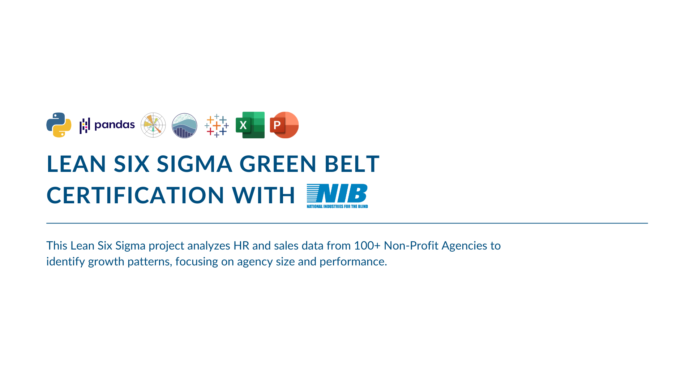

Lean Six Sigma Green Belt Certification with National Industries for the Blind (NIB)


Title
Leveraging Lean Six Sigma to Enhance Growth and Operational Efficiency at NIB
Description
- Project Duration: 02/2024 – 05/2024
- Project Type: Supply Chain & Data Analytics
- Team: Bhumit Sheth, Kanhao Lin, Darren Brito
- My Role: Data Analyst – Led data processing, statistical modeling, and visualization using Python
- Contribution: 100%
- Deliverables: Final PowerPoint presentation delivered to NIB stakeholders
🧩 PROJECT SUMMARY
This Lean Six Sigma Green Belt project, conducted in partnership with the National Industries for the Blind (NIB), explored disparities in growth among its network of Nonprofit Agencies (NPAs). Our goal was to determine if the Matthew Effect — where larger organizations grow disproportionately — was present, and how it might impact blind employment opportunities.
By analyzing 10 years of NPA performance data, we identified key disparities and systemic barriers that hinder equitable growth. Our findings directly informed strategic recommendations to rebalance the network, promote inclusive growth, and ensure equal employment opportunities for individuals who are blind
📊 METHODOLOGY
We followed the Lean Six Sigma DMAIC approach to investigate and address growth disparities among NPAs.
1. Define
- Created project charter and scoped objectives
- Defined performance metrics and success criteria
2. Measure
- Cleaned and merged sales + labor data
- Integrated datasets by NPA Code and Fiscal Year
3. Analyze
- Conducted Exploratory Data Analysis (EDA) to identify trends and patterns
- Used Pareto Analysis to reveal that 80% of sales came from just 25% of NPAs, highlighting high concentration
- Applied Fishbone Diagram and 5 Whys to explore potential root causes of growth imbalance
- Built a Composite Score from normalized sales and labor hours to assess NPA performance
- Classified NPAs as “large” or “small” based on Composite Score
- Analyzed growth trends by size group over a 10-year period
- Performed a Welch t-test, which found a statistically significant difference in growth rates between large and small NPAs (p < 0.05), supporting the presence of the Matthew Effect
- Created comparison graphs and visualizations to clearly communicate findings
4. Improve
- Benchmarked against industry practices to identify equitable growth strategies
- Suggested tailored recommendations for smaller NPAs: training, innovation support, and partnerships
- Proposed policy adjustments to address potential bias in contract assignments
- Focused on enhancing resources and visibility for smaller NPAs
5. Control
- Suggested ongoing tracking using the Composite Score to monitor performance
- Recommended alerts for identifying early signs of growth imbalance
- Proposed regular review cycles to assess and adjust strategies
- Suggested audits and compliance checks to maintain progress
💻 TOOLS
Python(Pandas,Matplotlib,Seaborn) : Data cleaning, Composite Score calculation, statistical tests (Welch t-test), visualization (matplotlib, seaborn)
Excel: Initial data formatting, filtering, pivot tables
Tableau: Data Visualization
Lean Six Sigma: DMAIC methodology, root cause analysis (Fishbone, 5 Whys)
PowerPoint: Final stakeholder presentation with data visualizations and recommendations
🔍 KEY INSIGHTS & FINDINGS
🚀 OUTCOMES & DELIVERABLES
We compiled our findings into a comprehensive PowerPoint presentation and delivered it to NIB leadership, outlining strategic recommendations for promoting equitable growth. The presentation also suggested policy-level discussions on resource allocation and monitoring NPA development. This project not only deepened my technical expertise in data analytics and statistical modeling but also honed my ability to engage with stakeholders and communicate complex insights effectively. I now feel better equipped to drive change with data-backed strategies.
This project was a powerful reminder of how data-driven insights can transform organizational strategies and policies. By uncovering the Matthew Effect and addressing growth disparities, we provided NIB with the tools to foster a more equitable, inclusive employment environment for individuals who are blind. It was an invaluable learning experience that further cemented my passion for using data to drive social change.
The order of content may appear differently on mobile devices. For optimal viewing, I recommend using a desktop. (Order: right → left)